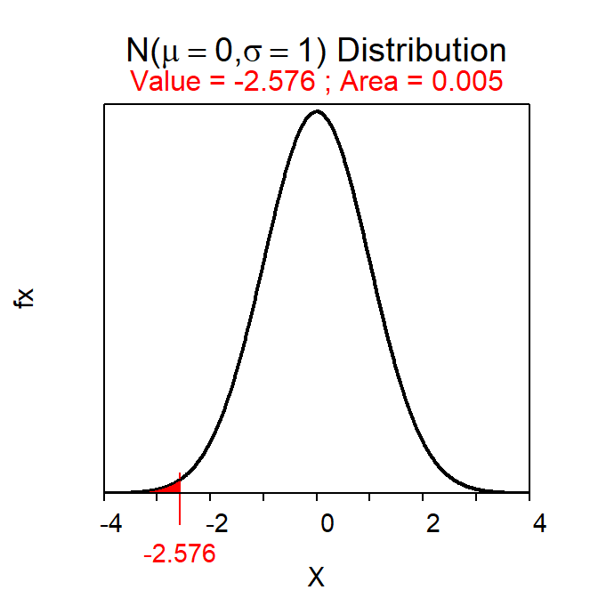

Module 15 Confidence Regions - Introduction
The final result from a hypothesis test (Module 13) can feel uneventful – i.e., either conclude that the parameter may be equal to or different from the hypothesized value.61 If the parameter is thought to be different from the hypothesized value we might then say that our best guess at the parameter is the observed statistic. However, as shown in Module 11, a statistic is an imperfect estimate of the unknown parameter because of sampling variability. This imperfectness can be recognized by computing a range of values that is likely to contain the parameter. For example, we may make a statement such as this – “I am 95% confident that the mean length of ALL fish in the lake is between 95.9 and 101.1 mm.” The range in this sentence acknowledges sampling variability and is called a confidence region. In this module, the concept, calculation, and interpretation of confidence regions is explored.
15.1 Confidence Concept
In this section, we focus on a 95% confidence interval (CI). General methods for constructing other types of confidence regions with other levels of confidence are in Section 15.2. Our goal here is to understand what it means to be “95% confident” that the parameter is within the CI range.
A 95% confidence interval for the population mean is computed with \(\bar{\text{x}}\)±2×SE\(_{\bar{\text{x}}}\). Again, the specifics of this will be discussed in Section 15.2, but note here that 2 SEs are used for a 95% CI because of the 68-95-99.7% Rule (see Section 6.3). For example, using the results of the first sample from Square Lake (Table 2.2) a 95% CI for the mean total length for the Square Lake population is 100.04±2\(\frac{31.49}{\sqrt{50}}\), 100.04±8.91, or (91.13,108.95). With this, we would conclude that the mean total length for ALL fish in Square Lake is between 91.13 and 108.95 mm.
For the Square Lake example (introduced in Module 1), it was known that μ=98.06 (Table 2.1). Thus, this particular CI actually does contain μ as 98.06 is between 91.13 and 108.95. In other words, this particular CI accomplished what it was intended to do; i.e., provide a range that contained μ.62
Despite the success observed in this first sample, not all confidence intervals will contain μ. For example, four of 100 95% confidence intervals shown in Figure 15.1 did not contain μ. Thus, the researcher would have concluded that μ was in an incorrect interval four times in these 100 samples. The concept of “confidence” in confidence regions is related to determining how often the intervals correctly contain the parameter.
Figure 15.1: Sampling distribution of the sample mean (top) and 100 95% confidence intervals (horizontal lines) from samples of n=50 from the Square Lake population. Confidence intervals that do NOT contain μ=98.06 are shown in red and with an open circle. The green shaded area represents 95% of the sample means. See text for more explanation.
From the Central Limit Theorem, the sampling distribution of \(\bar{\text{x}}\) for samples of n=50 is N(98.06,\(\frac{31.49}{\sqrt{50}}\)) or N(98.06,4.45) for this known population. According to the 68-95-99.7% Rule, it is known that 95% of the sample means in this sampling distribution will be between μ±2×SE or, in this specific case, between 98.06±2×4.45. The sampling distribution and this range of expected sample means is shown at the top of Figure 15.1. Note that any sample that produced a mean (dot on the CI line) inside the expected range of sample means (light green area) also produced a 95% CI that contained μ (i.e., black CI line with a solid circle). Because 95% of the sample means will be within the expected range of sample means, 95% of the 95% CIs will contain μ. So, “95% confident” means that 95% of all 95% CIs will contain the parameter and 5% will not. In other words, the mistake identified above will be made with only 5% of all 95% CIs.
The specifics for constructing confidence regions with different levels of confidence is described below. However, at this point, it should be noted that the number of CIs expected to contain the parameter of interest is set by the level of confidence used to construct the CI. For example, 80% of 80% CIs and 90% of 90% CIs will contain the parameter of interest. In either case, a particular CI either does or does not contain the interval and, in real-life, we will never know whether it does or does not (i.e., we won’t know the value of the parameter). However, we do know that the technique (i.e., the construction of the CI) will “work” (i.e., contain the parameter) a set percentage of the time. To reiterate this point, examine the 100 90% CIs (Figure 15.2-Left) and 100 80% CIs (Figure 15.2-Right) for the Square Lake fish length data.
Figure 15.2: Sampling distribution of the sample mean (tops) and 100 random 90% (Left) and 80% (Right) confidence intervals (horizontal lines) from samples of n=50 from the Square Lake population. Confidence intervals that do NOT contain μ are shown in red.
The concept of confidence regions can be difficult to grasp at first. Thus, one should consider the following subtleties about confidence regions.
- Each sample results in a different 95% CI (see CI lines in Figures 15.1 and 15.2) just like it results in a different \(\bar{\text{x}}\) (see dots on CI lines in Figures 15.1 and 15.2).
- Any CI either contains the parameter (e.g., μ) or it does not. However, on average, 95% of 95% CIs will contain the parameter and 5% will not. That is, 95% of all possible 95% CIs wil contain the parameter.
- A 95% CI is a technique that “works correctly” 95% of the time. In other words, 95% of all 95% CI “capture” the unknown parameter.
Because of these subtleties, confidence regions are often misinterpreted. Common misinterpretations are listed below with an explanation for the misinterpretation in parentheses. These misinterpretations should be studied, compared to the interpretations discussed above, and avoided.
- “There is a 95% probability that the population mean is contained in the confidence interval.”
- This is incorrect because the population mean is constant (not random), it either is or is not in a particular CI, and it will never change whether it is or is not in that CI. The CI, not the parameter, is random.
- “There is a 95% probability that the sample mean is contained in the confidence interval.”
- This is incorrect for the simple fact that CI are not used to estimate sample means (or, generally, statistics); they are used to estimate population means (or parameters). Furthermore, the sample mean has to be exactly in the middle of the CI (see next section).
- “95% of all 95% confidence intervals are contained in the confidence interval.”
- First, this is physically impossible because each CI is the same width (if n and the level of confidence stay constant). Second, it is not important how many CI are contained in a CI; interest is in whether the parameter is in the interval or not.
- Confidence intervals are constructed for parameters, not statistics.
- Care and specificity must be used when interpreting and describing confidence intervals.
15.2 Constructing Confidence Regions
Not all confidence regions are designed to contain the parameter 95% “of the time,” are intervals, or are computed to contain μ. Confidence regions can be constructed for any level of confidence, as intervals or bounds, and for nearly all parameters.
The level of confidence (C) used will be determined by the α chosen for the hypothesis test; specifically, C=100(1-α)%. For example, if α is set at 0.05, then the level of confidence will be 100(1-0.05)% (Table 15.1). Thus, if α is decreased such that fewer Type I errors are made, then the confidence level will increase and more of the confidence regions will contain the parameter of interest (i.e., fewer errors). In this manner the proportion of Type I errors in hypothesis testing is linked to the proportion of errors made with confidence regions.
| \(\alpha\) | C |
|---|---|
| 0.01 | 99% |
| 0.05 | 95% |
| 0.10 | 90% |
The type of confidence region depends on the type of alternative hypothesis (Table 15.2). If the alternative hypothesis is two-tailed (i.e., ≠), then the confidence region will be an interval (i.e., a range will be computed, as in Section 15.1). However, if the alternative hypothesis is one-tailed, then a confidence bound is used. For example, if the alternative hypothesis is a “less than,” then interest lies in determining what is the “largest possible value” for the parameter (rather than a range of possible values). In other words, if the alternative hypothesis is a “less than,” then an upper confidence bound for the parameter is constructed. In contrast, if the alternative hypothesis is a “greater than,” then a lower confidence bound is constructed to estimate the “smallest possible value” for the parameter.
| \(H_{A}\) | Confidence Region | Interpretation |
|---|---|---|
| \(\neq\) | Interval (CI) | Parameter between CI values |
| \(\lt\) | Upper Bound (UCB) | Parameter less than UCB value |
| \(\gt\) | Lower Bound (LCB) | Parameter greater than UCB value |
Fortunately, most confidence regions follow the same basic form of
\[ ``\text{Statistic"} + ``\text{scaling factor"} \times \text{SE}_{\text{statistic}} \]
where “Statistic” represents the statistic used to estimate the parameter, SEstatistic is the standard error of that statistic, and scaling factor”×SEstatistic is called the margin-of-error. The scaling factor is computed from a known distribution. When σ is known, the scaling factor is computed from a N(0,1) and is called Z*. Thus, in the case when a confidence interval is being constructed for μ and σ is known, the specific formula for the confidence region is
\[ \bar{\text{x}} + Z^{*}\frac{\sigma}{\sqrt{n}} \]
The “scaling factor” serves to control the width and type of confidence region. The magnitude of the scaling factor controls the relative width of the region such that the parameter is contained in the region at a rate according to the level of confidence. For example, the scaling factor for a 99% confidence region will be set such that 99% of the confidence regions will contain the parameter.
The sign of the scaling factor controls whether an interval, upper bound, or lower bound is computed. For example, if the alternative hypothesis is two-tailed, then Z* is the two values such that an area equal to the level of confidence is contained between them (Figure 15.3-Left). The two values that delineate these boundaries will be the same value but with different signs because the N(0,1) is symmetric about zero. Thus, a confidence interval is computed with a scaling factor of ±Z*.
Figure 15.3: Areas (yellow) that define Z* for confidence regions of a parameter in a hypothesis test.
In contrast, if the alternative hypothesis is a “less than,” then an upper confidence bound is desired and Z* has an area equal to the level of confidence LESS THAN it (Figure 15.3-Middle). As the level of confidence will always be greater than 50%, this definition will produce a positive Z* so that the scaling factor will be +Z*. Similarly, if the alternative hypothesis is a “greater than,” then a lower confidence bound is desired and Z* has an area equal to the level of confidence GREATER THAN it (Figure 15.3-Right). This definition produces a negative Z* so that the scaling factor will be -Z*.
When finding Z* for a confidence bound, the level of confidence always represents an area shaded in the same direction as the sign in HA.
15.3 Example Confidence Region Calculations
Constructing a proper confidence region should follow the five steps below. These steps are illustrated in three examples further below.
- Identify the level of confidence (i.e., C=100(1-α)%; Table 15.1).
- Identify the type of confidence regions – interval, lower bound, or upper bound (Table 15.2).
- Determine the scaling factor.
- Compute the actual confidence region.
- Interpret the confidence region.
Example - Square Lake (Less Than HA)
Consider the Square Lake example where HA:μ<105, α=0.05, and \(\bar{\text{x}}\)=100.04 from n=50 (Table 2.2).
- C=95% (=100(1-0.05)).
- Upper confidence bound because HA is a “less than.”
- Z*=+1.645 as show below.
- Note that
mean=0andsd=1are the default settings fordistrib()and can, thus, be omitted when finding a Z*.
- Note that
- 100.04+1.645\(\frac{31.49}{\sqrt{50}}\), 100.04+7.33, or 107.37.
- One is 95% confident that the mean total length of ALL fish in Square Lake is less than 107.4 mm.
distrib(0.95,type="q")
Example - Lake Superior Ice Cover (Not Equals HA)
Suppose that the Lake Superior ice cover data from Table 5.2 (note that \(\bar{\text{x}}\)=107.8 and n=42) was tested with HA: μ≠100, σ=22, and α=0.01.
- C=99% (=100(1-0.01)).
- Confidence interval because HA is a “not equals.”
- Z*=±2.576 as computed below.
- Here we are trying to find the two values of Z with the most common 99% of values between them. As is typical for a reverse-between calculation you want to find half the area outside of the “most common” value; i.e., 0.005. In this case I found the -Z* value; the “other” value is simply the positive version of this because the distribution is symmetric around 0.
- 107.8±2.576\(\frac{22}{\sqrt{42}}\), 107.8±8.74, or (99.06,116.54).
- One is 95% confident that the mean number of days of ice cover on Lake Superior during ALL years is between 99.1 and 116.5 days.
distrib(0.005,type="q")
Example - Battery Life (Greater Than HA)
Ssuppose that the second example hypothesis test in Module 13 about battery life (i.e., HA:μ>36 vs H0:μ=36) is being tested with α=0.10. Further suppose that σ=7 and that \(\bar{\text{x}}\)=45 from n=40.
- C=90% (=100(1-0.10)).
- Lower confidence bound because HA is a “greater than.”
- Z*=-1.282 as computed below.
- 45-1.282\(\frac{7}{\sqrt{40}}\), 45-1.42, or 43.58.
- Note that this becomes a subtraction because we are “adding” a margin-of-error that is computed with a negative Z*. Adding a negative presents as a subtraction.
- One is 90% confident that the mean life for ALL batteries with the additive is more than 43.58 months.
distrib(0.90,type="q",lower.tail=FALSE)
Depending on the HA it may be known if the parameter is more or less than the hypothesized value.↩︎
In reality you would usually not be able to determine if the CI contained μ or not because μ is typically not known. We use the Square Lake example here purely to demonstrate the concept of what 95% confidence means.↩︎